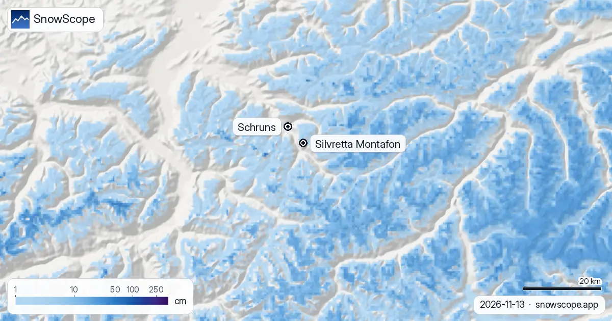
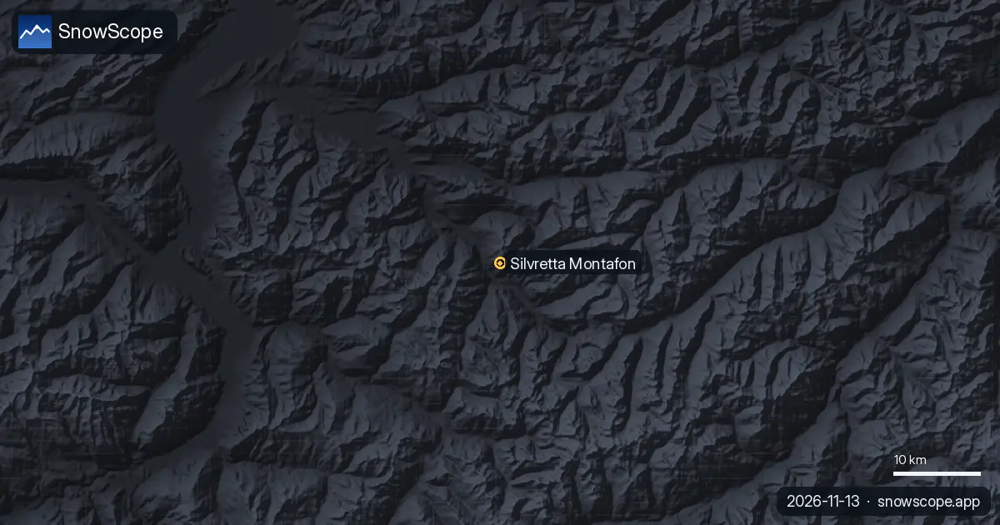

Montafon, estado de la nieve: nieve arriba, lluvia en el valle (13 de noviembre de 2026)
El Montafon vive dos estaciones a la vez. En la cima de Silvretta Montafon, a 2421 m, nuestro mapa de nieve muestra 4,5 cm en el suelo tras 5 cm de nieve nueva en las últimas 24 horas. A media altura, a 1555 m, y en el valle a 689 m, todavía no hay nada. La semana que viene trae unos 40 cm a la cima y 27 cm a media montaña, pero en el valle llueve: la cota de nieve está en algún punto entre 1.300 y 1.500 m.
Consulta la previsión de nieve en tiempo real de Silvretta Montafon en la app SnowScopeEspesor de nieve, alertas de nieve polvo y mapa 3D, gratis.
Tres pisos, tres días distintos
Silvretta Montafon es una de las estaciones más altas de Vorarlberg: los remontes y pistas cartografiados van de 689 m en el valle a 2421 m en la cima, 1732 m de desnivel. Esa diferencia de altura explica por sí sola las condiciones de mediados de noviembre.
Piso de arriba, alrededor del Hochjoch y de las crestas sobre Schruns y St. Gallenkirch: 4,5 cm de nieve, 9,5 cm caídos la semana pasada, 5 cm más en las próximas 24 horas. Piso del medio, a 1555 m: suelo desnudo, con 3 cm previstos para mañana. Planta baja, el valle alrededor de Schruns a 689 m: sin nieve, y seguirá casi todo verde esta semana.

Dónde está la cota de nieve esta semana
La lluvia y la nieve llegan en oleadas durante los próximos siete días. Nuestras cifras dan 40 cm en la cima, 27 cm a media montaña y 7,5 cm en el valle. Las previsiones con las que nos comparamos coinciden para la parte alta, con 28 a 49 cm, así que las cotas altas deberían quedar bien blancas.
Más abajo es otra historia. La cota de nieve, la altura donde la lluvia se convierte en nieve, está esta semana entre unos 1.300 y 1.500 m. En el valle eso significa lluvia. A media montaña va justo: en las referencias cerca del 45 % de lo que cae a 1555 m llega como lluvia, así que espere nieve húmeda y pesada más que polvo.
¿Va tarde el Montafon?
Un poco. En la mitad de nuestros 46 inviernos pasados (1980-81 a 2025-26) la cima de la estación tiene 41 cm en noviembre, la media montaña 11 cm y el valle 3 cm. Un invierno de cada diez la cima solo tiene 12 cm en estas fechas; otro de cada diez tiene 84 cm. Los 4,5 cm de hoy son pocos, pero una semana de 40 cm devolvería la cima al centro de lo habitual.
El calendario dice lo mismo. La primera nieve que dura suele llegar a la cima hacia el 16 de septiembre, a media montaña hacia el 3 de octubre y al valle hacia el 13 de octubre. Arriba van a tiempo; los dos pisos de abajo esperan aire más frío.
Las pistas de regreso necesitan diciembre
Las largas bajadas hasta los pueblos son lo último en llenarse. Un diciembre normal deja 18 cm en el valle y 35 cm a media montaña, y el valle llega a su máximo en febrero, con 40 cm en un invierno medio. En los años flojos, las pistas bajas dependen de la nieve artificial.
Ese piso de abajo es también el que más ha perdido con las décadas. El pico mediano en el valle bajó de 59 cm en los primeros 15 de nuestros inviernos a 42 cm en los últimos 15, y los días con nieve de 188 a 166 por invierno. Arriba el panorama es mucho más seguro: la cima tiene 50 cm o más durante 23 semanas en 9 de cada 10 inviernos, y su mejor semana, la 14 a principios de abril, los tuvo en todos nuestros inviernos, con un espesor mediano de 199 cm.
Consejos para esquiadores
- Esta semana cuente solo con el piso de arriba: mejor bajar en remonte que confiar en las pistas del valle.
- La nieve nueva sobre suelo desnudo esconde piedras y canaletas; quédese en pistas pisadas cuando abran los remontes.
- Antes de salir de las pistas balizadas, lea el boletín de aludes de Vorarlberg: la primera nieve en crestas cargadas por el viento suele ser la capa débil de todo el invierno.
Más mapas (sitios externos)
Referencias y créditos
- Silvretta Montafon, web oficial (remontes, fechas de apertura, plano de pistas) www.silvretta-montafon.at/
- Lawinenwarndienst Vorarlberg, boletín de aludes lawinen.report/
Sobre estas cifras
Cifras de nieve: el modelo de nieve de SnowScope, pasada del 12 de noviembre de 2026, a tres alturas de la estación (valores para la zona, no mediciones de la estación), y nuestro histórico de nieve, 46 inviernos pasados (1980-81 a 2025-26), un modelo del pasado corregido por altitud. Cota de nieve y rango de comparación: previsiones meteorológicas independientes leídas a las mismas alturas, el control que pasa cada artículo de SnowScope antes de salir. Longitud de pistas y número de remontes: cartografía de OpenSkiMap. Las previsiones cambian: mire el mapa antes de ir.
Boletines oficiales de aludes: Lawinenwarndienst Vorarlberg
Citar este informe
Para investigación, docencia o prensa: cifras y gráficos reutilizables libremente bajo CC BY 4.0 con esta cita.
SnowScope (2026), Montafon, estado de la nieve: nieve arriba, lluvia en el valle (13 de noviembre de 2026), https://snowscope.app/blog/es/2026/11/montafon-snow-conditions-13-november-2026.html, consultado el 2026-11-13
SnowScope (Atlas Labs). (2026, November 13). Montafon, estado de la nieve: nieve arriba, lluvia en el valle (13 de noviembre de 2026). SnowScope snow reports. https://snowscope.app/blog/es/2026/11/montafon-snow-conditions-13-november-2026.html
BibTeX
@misc{snowscope2026montafonsnowconditions13,
author = {{SnowScope (Atlas Labs)}},
title = {Montafon, estado de la nieve: nieve arriba, lluvia en el valle (13 de noviembre de 2026)},
year = {2026},
month = nov,
howpublished = {\url{https://snowscope.app/blog/es/2026/11/montafon-snow-conditions-13-november-2026.html}},
note = {Published 2026-11-13 14:11 UTC; accessed 2026-11-13}
}· CC BY 4.0 · Métodos, datos y herramientas →
Silvretta Montafon: nieve y temperatura según la altura, este invierno vs el pasado (herramientas) →
Sigue Silvretta Montafon
Gratis: un aviso cuando llega la nieve y la previsión cada mañana.
Más partes de nieve

Un plan barato de 3 días en el lago de Como en diciembre con precios reales 2026-27: trenes, barcos, funicular y esquí en Piani di Bobbio o Madesimo, lo que ahorras frente a Cortina y la probabilidad de nieve en Navidad.

En diciembre, la nieve depende sobre todo de la altura. 46 inviernos pasados en 676 estaciones de los Alpes muestran cuánta nieve esperar el 1, el 15 y el 22 de diciembre, desde menos de 1200 m hasta más de 2400 m.

Dónde diciembre de 2026 parece más o menos nevado en los Dolomitas, de Val Gardena a Cortina: la previsión estacional europea, nuestro mapa y las probabilidades de una Navidad blanca.